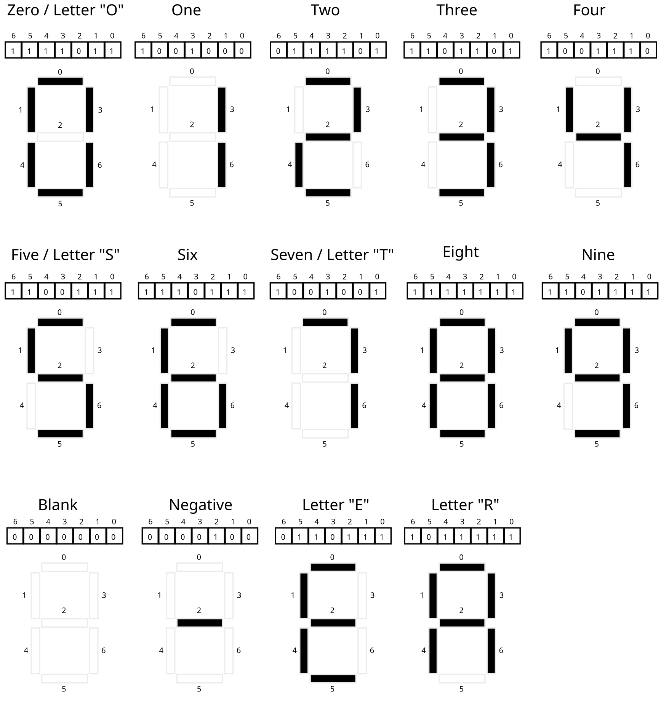
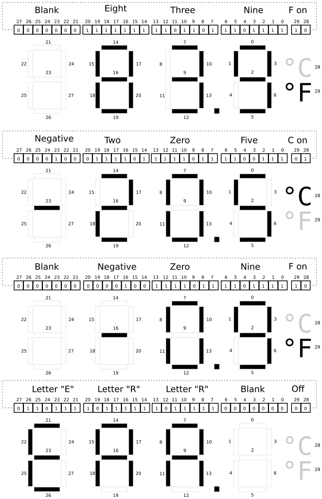

CMSC216 Project 2: Bit Ops, Debugging, Data Structures
- Due: 11:59pm Fri 08-Mar-2024
- Approximately 4.0% of total grade
- Submit to Gradescope
- Projects are individual work: no collaboration with other students is allowed. Seek help from course staff if you get stuck for too long.
CODE/TEST DISTRIBUTION: p2-code.zip
VIDEO OVERVIEW: https://youtu.be/qXFjuf9Tpv4
CHANGELOG:
- Mon Mar 4 10:52:35 AM EST 2024
- Several students have asked about
the file
hashmap_demo_init.cwhich was mistakenly left out ofp2-code.zip. This is not a required file but was meant to demonstrate some syntax associated with Problem 3. Students may download the file directly here: hashmap_demo_init.c or retrieve it from the now updatedp2-code.zipcodepack. - Fri Mar 1 01:15:21 PM EST 2024
- Gradescope submission is now open for Project 2.
- Thu Feb 29 04:27:43 PM EST 2024
- Minor language tweaks in Manual
Inspection Criteria for
thermo_update()to clarify use of global variables. - Wed Feb 28 04:50:43 PM EST 2024
Post 181 identified a bug in problem 1 where the
main()function inthermo_main.cprints out inaccurate information (mixes up Celsius and Fahrenheit). While cosmetic, we'll correct this bug now by replacing the following two provide files with updated versions.Download these two files and replace the existing versions with these updated versions. The current codepack contains the updated versions so those who are just downloading now will not need to update the files.
- Wed Feb 28 03:41:51 PM EST 2024
A video overview of the project has now been posted here: https://youtu.be/qXFjuf9Tpv4
Some minor flaws in the
hashmap.handMakefilehave been corrected that affect problem 3 along with typos fixed in the Project specification. You may wish to update those files but it is not strictly necessary.
1 Introduction
This project addresses more advanced C programming topics each in its own problem.
- Bit-level operations are common in C and systems programming. This assignment features a problem in which shifting and bitwise AND/OR-ing are required to complete the requirements.
- Debugging is also a critical skill enabled by the debugger. The
second problem in the assignment makes use of the GNU Debugger,
gdb, to work through a puzzle program requiring specific inputs to pass its "phases". - Data structures pervade computing and getting some practice with them in C will improve one's skill at pointers and memory usage while also giving a great appreciation for garbage collected languages. A basic "map" application which maps keys to values is implemented that is backed by a hash table.
Difficulty Note
Past students have found this content to be more challenging than Project 1.
If you were pressed for time to finish Project 1, start this project as early as possible. Most students have found the first two problems (bit manipulations and debugging) only mildly challenging but run out of time on the larger third problem.
You have been warned.
2 Download Code and Setup
Download the code pack linked at the top of the page. Unzip this which will create a project folder. Create new files in this folder. Ultimately you will re-zip this folder to submit it.
| File | State | Notes |
|---|---|---|
thermo.h |
Provided | Problem 1 header file |
thermo_main.c |
Provided | Problem 1 main() function for thermometer simulation |
thermo_update.c |
CREATE | Create this file and write required function in it to complete Problem 1 |
thermo_examples.sh |
Sample | Prints a variety of sample runs of thermo_main |
test_thermo_update.c |
Testing | Problem 1 functions tests for thermo_upate.c |
test_thermo_update.org |
Testing | Problem 1 testing data file |
puzzlebox.c |
Provided | Problem 2 Debugging problem |
input.txt |
EDIT | Problem 2 Input for puzzlebox, fill this in |
hashmap_funcs.c |
CREATE | Problem 3 functions to write |
hashmap_main.c |
CREATE | Problem 3 main function to write |
hashmap.h |
Provided | Problem 3 header file |
data/hash-demo.script |
Data | Problem 3 sample input script to main program |
data/stranger.hm |
Data | Problem 3 sample hash map saved to file |
data/other.script |
Data | Problem 3 sample input script to main program |
data/other.hm |
Data | Problem 3 sample hash map saved to file |
data/big.script |
Data | Problem 3 sample input script to main program |
data/big.hm |
Data | Problem 3 sample hash map saved to file |
test_hashmap.org |
Testing | Problem 3 tests |
Makefile |
Provided | Build file to compile all programs |
testy |
Testing | Test running script |
Makefile
As in the first assignment, a Makefile is provided as part of this
project. The essential targets pertinent to each problem are described
in those sections. The Makefile is equipped with a brief help
listing:
>> make help Typical usage is: > make # build all programs > make clean # remove all compiled items > make zip # create a zip file for submission > make prob1 # built targets associated with problem 1 > make test-prob1 testnum=5 # run problem 1 test #5 only > make test-prob2 # run test for problem 2 > make test # run all tests
Automated Tests
As in previous assignments, automated tests are provided and associated with problems. Each problem describes how to run tests associated with it. Generally this is done as before:
>> make test-prob1 gcc -Wall -Wno-comment -Werror -g -c batt_main.c gcc -Wall -Wno-comment -Werror -g -c batt_update.c ... ./testy test_bat_update.org ============================================================ == test_prob1.org : Problem 1 test_batt_update and batt_main tests == Running 35 / 35 tests 1) set_batt_from_ports() 0 V : ok 2) set_batt_from_ports() 0 P : ok 3) set_batt_from_ports() 7400 V : ok 4) set_batt_from_ports() 7400 P : ok 5) set_batt_from_ports() mixed STATUS V : ok ... >> make test-prob2 # run "tests" associated with problem 2 ... >> ./puzzlebox input.txt # same as above: run puzzlebox to test answers
3 Problem 1: Thermometer Simulation
3.1 Overview
You are tasked with writing code which will be run by a microcontroller in a digital thermometer. The hardware has the following relevant features.
- A temperature sensor whose value can be accessed via a memory mapped port. In C this is presented as a global variable. Another port indicates whether the temperature should be displayed in Celsius or Fahrenheit.
- A digital with a port control port; setting certain global variable will change the temperature display with
- User code that you will need to write to update the display based on the temperature sensor.
- A simulator program with
Makefileto test your code
All of the code for this problem will be written in the file
thermo_update.c which you will create. Each feature of the
simulated hardware and how it relates to the functions that you will
write in thermo_update.c are discussed in subsequent sections.
Temperature Sensor
A temperature sensor is attached to the thermometer and can be
accessed via a C global variable. This is declared in the thermo.h
header file as follows.
extern short THERMO_SENSOR_PORT; // Set by the sensor to indicate temperature. Value is a positive int // in units of 0.1 / 32 deg C above -45.0 deg C with a max of +45.0 // deg C. Above the max, the sensor becomes unreliable and below 0 // indicates the senor is failing.
You do not need to define this variable as it is already there. You do
not need to set this variable as it is automatically changed by the
hardware. Instead, you will need to access its value to determine
various aspects of the temperature. Note the type which is short:
positive and negatives values are present in it and the variable will
have 16 bits. The temperature sensor has a limited range and uses
units of 1/32 of a tenth degree above -45.0 deg C. This leads to
the following equivalences.
| Sensor | Celsius | Notes |
|---|---|---|
| 0 | -45.0 | Minimum valid sensor value / measurable temp |
| 15 | -45.0 | Remainder rounded down |
| 16 | -44.9 | Remainder rounded up |
| 32 | -44.9 | Exactly one tenth degree above -45.0 deg C |
| 64 | -44.8 | Exactly two tenths degree above -45.0 deg C |
| 320 | -44.0 | Exactly ten tenths = one degree above -45.0 deg C |
| 3200 | -35.0 | Ten degrees above -45.0 C |
| 14080 | -1.0 | 44.0 degrees above -45.0 |
| 14240 | -0.5 | 44.5 degrees above -45.0 |
| 14400 | 0.0 | 45.0 degrees above -45.0 |
| 14432 | 0.1 | 45.1 degrees above -45.0 |
| 17600 | 10.0 | degrees above -45.0 |
| 28800 | 45.0 | 90.0 degrees above -450.0, MAXIMUM measurable temp |
| 28801 | ERR | Error: sensor out of range |
| 29742 | ERR | Error: sensor out of range |
| -5 | ERR | Error: sensor malfunction |
| -1245 | ERR | Error: sensor malfunction |
Notice 32 units of value in the sensor are 0.1 degree Celsius starting from -45.0 deg C. The maximum value allowable is 45.0 deg Celsius which is a sensor value of 28800.
Notice also that the temperature should be rounded appropriately:
- The temperature sensor is 1/32 of a tenth degree
- A sensor value of 7 rounds down to -45.0 deg C
- A sensor value of 15 rounds down to -45.0 deg C
- A sensor value of 16 rounds up to -44.9 deg C
- A sensor value of 30 rounds up to -44.9 deg C
Temperature Display Mode
Another global variable exposes whether the user has pressed a button which toggles between displaying temperature in the two most common scales: Celsius or Fahrenheit. It also exposes whether there are internal hardware problems in which case the display should show an error.
extern unsigned char THERMO_STATUS_PORT; // Bit 5 indicates whether display should be in Celsius (0) or // Fahrenheit (1). This bit is toggled using a button on the // thermometer but is set using command line args in the simulator. // // Bit 2 is 0 for normal operation or 1 for an ERROR state. When in // ERROR state, ERR should be shown on the display. // // Remaining bits may be 0 or 1 and should be ignored as they are not // relevant to the display or temperature sensor.
Both bits 5 and 2 will need to be checked to adjust the display according to the documentation provided. The remaining bits are ignored.
Display Port
The thermometer has a digital display which shows the temperature. This display is controlled by a special memory area exposed as another global variable in C.
extern int THERMO_DISPLAY_PORT; // Controls thermometer display. Readable and writable. Routines // wishing to change the display should alter the bits of this // variable.
While listed as in int, each bit of the is actually tied to part of
the thermometer display screen. When bits are set to 1, part of the
display is lit up while 0 means it is not lit.
3.2 Diagrams of Display
The following diagram shows bit patterns for various symbols and how
they correspond to parts of a single digit of the display. Digits are
displayed by darkening certain bars in the display which correspond
to certain bits in the THERMO_DISPLAY_PORT being set.

Figure 1: Correspondence of bit in THERMO_DISPLAY_PORT to bars in a single digit. The 0th bit controls the top horizontal bar, the 1th bit controls the upper left bar, and so on working generally left to right nad top down. When a bit is 1 (set), the bar will be darkened while when the bit is 0 (clear) the bar will not be displayed (shown as empty). The combinations of bits shown are the only ones that arise when showing digits for temperatures.
Notice the following.
- Bits that are set (equal to 1) will turn on (darken) one bar of the display digit
- Bits that are clear (equal to 0) will turn off one bar of the digit
- 7 bits are required to control the display of one digit
- The bits are arranged with the low order bit (bit 0) for the middle
bar and remaining bits control bars starting from the top going
around clockwise
- Bit 0 top middle
- Bit 1 top left
- Bit 2 middle middle
- Bit 3 top right
- Bit 4 lower left
- Bit 5 lower middle
- Bit 6 lower right
- The programmer can set bits to any pattern which will be displayed but only patterns shown correspond to symbols of interest.
Temperature is displayed with several adjacent digits along with a
Celsius/Fahrenheit indicator. The diagram below shows several full
temperatures along with the bits representing the digits. The bits
correspond to how the global variable THERMO_DISPLAY_PORT should be
set in order to make the temperature appear as it does.

Figure 2: Full examples of how the 30 bits of the thermometer display state control which parts of the temperature are shown. Each digit follows the same pattern of bit to bar correspondence as the right-most bits. The lowest order (rightmost) bit controls the top bar of each digit and remaining bits control bars proceeding left-to-right and top down for digit. The highest order bits (28 and 29) control whether the Celsius or Fahrenheit indicators are shown. Note that both could be shown at the same time or neither shown but this should not be done for actual temperatures.
Notice the following.
- You may presume that the
THERMO_DISPLAY_PORTis a 32-bit integer. - 30 bits are used to control the full temperature display.
- Bits 0-6 control the tenths place
- Bits 7-13 control the ones place
- Bits 14-20 control the tens place
- Bits 21-27 control the hundreds place
- Bit 28 controls whether degrees Celsius is shown
- Bit 29 controls whether degrees Fahrenheit is shown
- Bits 30 and 31 are not used and should always be 0.
3.3 thermo_update.c: Updating the Display with User Code
Periodically the microcontroller will run code to adjust the thermometer display to show the current temperature. This function is
int thermo_update();
and it will be your job to write this function
Rather than write everything that needs to be done within
thermo_update(), several helper functions will be used to divide this
task into several more manageable and testable chunks. These are
int set_temp_from_ports(temp_t *temp); int set_display_from_temp(temp_t temp, int *display);
and are described in subsequent sections.
All these function should be written in thermo_update.c.
3.4 set_temp_from_ports()
int set_temp_from_ports(temp_t *temp); // Uses the two global variables (ports) THERMO_SENSOR_PORT and // THERMO_STATUS_PORT to set the fields of `temp`. If // THERMO_SENSOR_PORT is negative or above its maximum trusted value // (associated with +45.0 deg C), this function sets the // tenths_degrees to 0 and the temp_mode to 3 for `temp` before // returning 1. Otherwise, converts the sensor value to deg C using // shift operations. Further converts to deg F if indicated from // THERMO_STATUS_PORT. Sets the fields of `temp` to appropriate // values. `temp_mode` is 1 for Celsius, and 2 for Fahrenheit. Returns // 0 on success. This function DOES NOT modify any global variables // but may access them. // // CONSTRAINTS: Uses only integer operations. No floating point // operations are used as the target machine does not have a FPU. Does // not use any math functions such as abs().
This function works with the struct temp_t defined in thermo.h which
has the following layout.
// Breaks temperature down into constituent parts
typedef struct{
short tenths_degrees; // actual temp in tenths of degrees
char temp_mode; // 1 for celsius, 2 for fahrenheit, 3 for error
} temp_t;
The function set_temp_from_ports() will read the global variables
mentioned above and fill in values for the struct fields of the
parameter temp. To convert the temperature sensor value to a
displayable temperature, one must perform some division and modulo
operations.
- "Divide" the sensor value by 32 to get the number of tenths degrees Celsius above -45.0 deg C. Note the documentation indicates that this can be done using a shift operation as we are dividing by a power of two.
- Round up if the remainder is high enough. Note that when using shifting bits to emulate division by a power of 2 bits which are shifted off would be the remainder and these can be isolated with appropriate bitwise logical operations to check them.
- Account for the offset from -45.0 deg C by subtracting.
- Check
THERMO_STATUS_PORTto see if conversion to Fahrenheit is needed. If conversion is needed, use the formula
farenheit = (celsius * 9) / 5 + 32;
but note that we are working in tenths degrees so adjustments may be needed. No rounding is done when converting from Celsius to Fahrenheit. Use of this conversion and lack of rounding means that, despite the high-resolution temperature, degrees in Fahrenheit only appear in increments of about 0.2 deg F giving it less resolution than the Celsius. This is the price of a simpler implementation. Continue to abide by the constraint: do not use floating point operations. Simple microprocessors cannot perform floating point operations as they lack a Floating Point Unit (FPU).
3.5 set_display_from_temp()
int set_display_from_temp(temp_t temp, int *display); // Alters the bits of integer pointed to by display to reflect the // temperature in struct arg temp. If temp has a temperature value // that is below minimum or above maximum temperature allowable or if // the temp_mode is not Celsius or Fahrenheit, sets the display to // read "ERR" and returns 1. Otherwise, calculates each digit of the // temperature and changes bits at display to show the temperature // according to the pattern for each digit. This function DOES NOT // modify any global variables except if `display` points at one. // // CONSTRAINTS: Uses only integer operations. No floating point // operations are used as the target machine does not have a FPU. Does // not use any math functions such as abs().
This function sets the bits in the integer pointed to by display
which. In some cases display may point at THERMO_DISPLAY_PORT
which will adjust the display itself, but it is useful in testing to
change other integers, thus the pointer argument.
To properly set the display bits, set_display_from_temp() will need
to do bit shifting along with bitwise operations to construct the
correct bit pattern for the thermometer display.
A good trick to use is to create a series of bit patterns that
correspond to the various digits. For example, according to the
diagrams above, the bit pattern for 9 is 0b1011111. If a 9
should appear on the display somewhere, this bit pattern should be
shifted and combined with the existing bits in display so that a 9
will show. Creating similar constant mask patterns for each digit,
the minus sign, and the position of the Celsius/Fahrenheit indicator
is a good way to make this problem manageable.
A detailed explanation of one approach to the problem follows.
- The
displayparameter may point to an integer with arbitrary bits in it. Work around this either by (A) creating a localintinitialized to 0, arranging the display, and then deref-settingdisplayto that integer OR (B) deref-settingdisplayto 0 before altering it. - Create an array of bit masks for each of the digits 0-9. The 0th
element of the array contains a bit mask like
0b1111011which represents the bits that should be set for a 0 digit, the 1th element of this array has a mask like0b1001000which are the bits to be set for a 1. There should be ten entries in this array in indices 0-9. The array can be a global variable or an array local to some function. - Use modulo to determine the integer value for the tens, ones, and
tenths digits for the temperature. Call these variables something
like
temp_hundreds,temp_tensand so on. Each variable should be in the range 0-9. - Start with an integer variable of 0 (all 0 bits).
- Use
temp_tensto index into your array of masks to determine the bits that should be set for it. Combine the state variable withtemp_onesmask. - Combining bits here is a logical operation of setting all bits that are one in the mask to 1 in the display variable.
- Use
temp_hundredsto index into your array of masks for the right mask for that digit. The bits corresponding to the hundreds place of the temperature is shifted to the left by 21 bits so shift the mask to the left and combine it with the state variable. - Repeat this process for the tens digit (shifted by 14) ones, and tenths digits.
- Early in the function, check that the ranges for the
tenths_degreesandtemp_modefields are in range. If they are note, populatedisplaywith theERRmessage and return 1. There are several special cases to consider: leading 0's should be blanks so nothing should be drawn. Also, the negative sign should be positioned immediately to the left of the first non-blank digit. A couple examples of how this looks are below with the underscore representing a blank space.
RIGHT WRONG _22.4 deg C 022.4 deg C _-1.5 deg C -01.5 deg C _-2.7 deg C -_2.7 deg C ERR._ _____ ERR.0 deg C
3.6 thermo_update()
int thermo_update(); // Called to update the thermometer display. Makes use of // set_temp_from_ports() and set_display_from_temp() to access // temperature sensor then set the display. Always sets the display // even if the other functions returns an error. Returns 0 if both // functions complete successfully and return 0. Returns 1 if either // function or both return a non-zero values. // // CONSTRAINT: Does not allocate any heap memory as malloc() is NOT // available on the target microcontroller. Uses stack and global // memory only.
NOTE: This documentation was updated to remove some inconsistencies after the initial release of the project.
This function makes use of the previous two functions and the global variables that correspond to the hardware to alter the display. It should be relatively short by making use of the previous functions.
3.7 Thermometer Simulator
While we do not have actual hardware with the features mentioned, a
simulator for the system is in the provided file thermo_main.c. You
do not need to modify or understand code in either file to complete
the assignment though it will certainly expand you C skills to spend
some time examining them.
The main() function in thermo_main.c accepts two command line
arguments which are the value for the temperature sensor and whether
the thermometer is in Celsius or Fahrenheit mode. It will call your
functions for this problem and show results for it. You are
encouraged to use this function to test your code incrementally
- Examine whether
set_temp_from_ports()is correct based on the first part of output inthermo_main.c - Once
set_temp_from_ports()is complete, examine whether the output ofset_display_from_temp()is correct based on the latter part of the output. - Once both these functions are correct, examine whether
thermo_update()is correct based on the final part of the output of themain()function.
Note that there are a variety of functions in the thermo_main.c
which are used to simulate how the thermometer will display. This is
also where the global variables like THERMO_DISPLAY_PORT are
defined. However, you do not need to modify or even understand the
code; it is only used to show how the display would look when the
THERMO_DISPLAY_PORT bits are set.
3.8 Sample Runs of thermo_main
Below are samples generated by compiling and running the main()
function in the thermo_main.c file. The code is compiled by using
the provided Makefile to create the thermo_main program. It
compiles the the functions you write in the file thermo_update.c and
combines them with functions in thermo_main.c.
########## CELSIUS FOR 0 ##########
>> ./thermo_main 0 C
THERMO_SENSOR_PORT set to: 0
THERMO_STAUS_PORT set to: 1000 1000
index: 4 0
result = set_temp_from_ports(&temp);
result: 0
temp = {
.tenths_degrees = -450
.temp_mode = 1
}
Simulated temp is: -45.0 deg C
result = set_display_from_temp(temp, &display);
result: 0
display is
bits: 00 01 0000100 1001110 1100111 1111011
index: 30 28 21 14 7 0
result = thermo_update();
result: 0
THERMO_DISPLAY_PORT is
bits: 00 01 0000100 1001110 1100111 1111011
index: 30 28 21 14 7 0
Thermometer Display:
~~ ~~
| | | | | o
~~ ~~ ~~ C
| | | |
~~ o ~~
########## FAHRENHEIT FOR 0 ##########
>> ./thermo_main 0 F
THERMO_SENSOR_PORT set to: 0
THERMO_STAUS_PORT set to: 1010 1000
index: 4 0
result = set_temp_from_ports(&temp);
result: 0
temp = {
.tenths_degrees = -490
.temp_mode = 2
}
Simulated temp is: -49.0 deg F
result = set_display_from_temp(temp, &display);
result: 0
display is
bits: 00 10 0000100 1001110 1101111 1111011
index: 30 28 21 14 7 0
result = thermo_update();
result: 0
THERMO_DISPLAY_PORT is
bits: 00 10 0000100 1001110 1101111 1111011
index: 30 28 21 14 7 0
Thermometer Display:
~~ ~~
| | | | | |
~~ ~~ ~~ o
| | | | F
~~ o ~~
########## CELSIUS FOR 10 ##########
>> ./thermo_main 10 C
THERMO_SENSOR_PORT set to: 10
THERMO_STAUS_PORT set to: 1000 1000
index: 4 0
result = set_temp_from_ports(&temp);
result: 0
temp = {
.tenths_degrees = -450
.temp_mode = 1
}
Simulated temp is: -45.0 deg C
result = set_display_from_temp(temp, &display);
result: 0
display is
bits: 00 01 0000100 1001110 1100111 1111011
index: 30 28 21 14 7 0
result = thermo_update();
result: 0
THERMO_DISPLAY_PORT is
bits: 00 01 0000100 1001110 1100111 1111011
index: 30 28 21 14 7 0
Thermometer Display:
~~ ~~
| | | | | o
~~ ~~ ~~ C
| | | |
~~ o ~~
########## FAHRENHEIT FOR 10 ##########
>> ./thermo_main 10 F
THERMO_SENSOR_PORT set to: 10
THERMO_STAUS_PORT set to: 1010 1000
index: 4 0
result = set_temp_from_ports(&temp);
result: 0
temp = {
.tenths_degrees = -490
.temp_mode = 2
}
Simulated temp is: -49.0 deg F
result = set_display_from_temp(temp, &display);
result: 0
display is
bits: 00 10 0000100 1001110 1101111 1111011
index: 30 28 21 14 7 0
result = thermo_update();
result: 0
THERMO_DISPLAY_PORT is
bits: 00 10 0000100 1001110 1101111 1111011
index: 30 28 21 14 7 0
Thermometer Display:
~~ ~~
| | | | | |
~~ ~~ ~~ o
| | | | F
~~ o ~~
########## CELSIUS FOR 20 ##########
>> ./thermo_main 20 C
THERMO_SENSOR_PORT set to: 20
THERMO_STAUS_PORT set to: 1000 1000
index: 4 0
result = set_temp_from_ports(&temp);
result: 0
temp = {
.tenths_degrees = -449
.temp_mode = 1
}
Simulated temp is: -44.9 deg C
result = set_display_from_temp(temp, &display);
result: 0
display is
bits: 00 01 0000100 1001110 1001110 1101111
index: 30 28 21 14 7 0
result = thermo_update();
result: 0
THERMO_DISPLAY_PORT is
bits: 00 01 0000100 1001110 1001110 1101111
index: 30 28 21 14 7 0
Thermometer Display:
~~
| | | | | | o
~~ ~~ ~~ ~~ C
| | |
o ~~
########## FAHRENHEIT FOR 20 ##########
>> ./thermo_main 20 F
THERMO_SENSOR_PORT set to: 20
THERMO_STAUS_PORT set to: 1010 1000
index: 4 0
result = set_temp_from_ports(&temp);
result: 0
temp = {
.tenths_degrees = -488
.temp_mode = 2
}
Simulated temp is: -48.8 deg F
result = set_display_from_temp(temp, &display);
result: 0
display is
bits: 00 10 0000100 1001110 1111111 1111111
index: 30 28 21 14 7 0
result = thermo_update();
result: 0
THERMO_DISPLAY_PORT is
bits: 00 10 0000100 1001110 1111111 1111111
index: 30 28 21 14 7 0
Thermometer Display:
~~ ~~
| | | | | |
~~ ~~ ~~ ~~ o
| | | | | F
~~ o ~~
########## CELSIUS FOR 34 ##########
>> ./thermo_main 34 C
THERMO_SENSOR_PORT set to: 34
THERMO_STAUS_PORT set to: 1000 1000
index: 4 0
result = set_temp_from_ports(&temp);
result: 0
temp = {
.tenths_degrees = -449
.temp_mode = 1
}
Simulated temp is: -44.9 deg C
result = set_display_from_temp(temp, &display);
result: 0
display is
bits: 00 01 0000100 1001110 1001110 1101111
index: 30 28 21 14 7 0
result = thermo_update();
result: 0
THERMO_DISPLAY_PORT is
bits: 00 01 0000100 1001110 1001110 1101111
index: 30 28 21 14 7 0
Thermometer Display:
~~
| | | | | | o
~~ ~~ ~~ ~~ C
| | |
o ~~
########## FAHRENHEIT FOR 34 ##########
>> ./thermo_main 34 F
THERMO_SENSOR_PORT set to: 34
THERMO_STAUS_PORT set to: 1010 1000
index: 4 0
result = set_temp_from_ports(&temp);
result: 0
temp = {
.tenths_degrees = -488
.temp_mode = 2
}
Simulated temp is: -48.8 deg F
result = set_display_from_temp(temp, &display);
result: 0
display is
bits: 00 10 0000100 1001110 1111111 1111111
index: 30 28 21 14 7 0
result = thermo_update();
result: 0
THERMO_DISPLAY_PORT is
bits: 00 10 0000100 1001110 1111111 1111111
index: 30 28 21 14 7 0
Thermometer Display:
~~ ~~
| | | | | |
~~ ~~ ~~ ~~ o
| | | | | F
~~ o ~~
########## CELSIUS FOR 160 ##########
>> ./thermo_main 160 C
THERMO_SENSOR_PORT set to: 160
THERMO_STAUS_PORT set to: 1000 1000
index: 4 0
result = set_temp_from_ports(&temp);
result: 0
temp = {
.tenths_degrees = -445
.temp_mode = 1
}
Simulated temp is: -44.5 deg C
result = set_display_from_temp(temp, &display);
result: 0
display is
bits: 00 01 0000100 1001110 1001110 1100111
index: 30 28 21 14 7 0
result = thermo_update();
result: 0
THERMO_DISPLAY_PORT is
bits: 00 01 0000100 1001110 1001110 1100111
index: 30 28 21 14 7 0
Thermometer Display:
~~
| | | | | o
~~ ~~ ~~ ~~ C
| | |
o ~~
########## FAHRENHEIT FOR 160 ##########
>> ./thermo_main 160 F
THERMO_SENSOR_PORT set to: 160
THERMO_STAUS_PORT set to: 1010 1000
index: 4 0
result = set_temp_from_ports(&temp);
result: 0
temp = {
.tenths_degrees = -481
.temp_mode = 2
}
Simulated temp is: -48.1 deg F
result = set_display_from_temp(temp, &display);
result: 0
display is
bits: 00 10 0000100 1001110 1111111 1001000
index: 30 28 21 14 7 0
result = thermo_update();
result: 0
THERMO_DISPLAY_PORT is
bits: 00 10 0000100 1001110 1111111 1001000
index: 30 28 21 14 7 0
Thermometer Display:
~~
| | | | |
~~ ~~ ~~ o
| | | | F
~~ o
########## CELSIUS FOR 1607 ##########
>> ./thermo_main 1607 C
THERMO_SENSOR_PORT set to: 1607
THERMO_STAUS_PORT set to: 1000 1000
index: 4 0
result = set_temp_from_ports(&temp);
result: 0
temp = {
.tenths_degrees = -400
.temp_mode = 1
}
Simulated temp is: -40.0 deg C
result = set_display_from_temp(temp, &display);
result: 0
display is
bits: 00 01 0000100 1001110 1111011 1111011
index: 30 28 21 14 7 0
result = thermo_update();
result: 0
THERMO_DISPLAY_PORT is
bits: 00 01 0000100 1001110 1111011 1111011
index: 30 28 21 14 7 0
Thermometer Display:
~~ ~~
| | | | | | o
~~ ~~ C
| | | | |
~~ o ~~
########## FAHRENHEIT FOR 1607 ##########
>> ./thermo_main 1607 F
THERMO_SENSOR_PORT set to: 1607
THERMO_STAUS_PORT set to: 1010 1000
index: 4 0
result = set_temp_from_ports(&temp);
result: 0
temp = {
.tenths_degrees = -400
.temp_mode = 2
}
Simulated temp is: -40.0 deg F
result = set_display_from_temp(temp, &display);
result: 0
display is
bits: 00 10 0000100 1001110 1111011 1111011
index: 30 28 21 14 7 0
result = thermo_update();
result: 0
THERMO_DISPLAY_PORT is
bits: 00 10 0000100 1001110 1111011 1111011
index: 30 28 21 14 7 0
Thermometer Display:
~~ ~~
| | | | | |
~~ ~~ o
| | | | | F
~~ o ~~
########## CELSIUS FOR 12689 ##########
>> ./thermo_main 12689 C
THERMO_SENSOR_PORT set to: 12689
THERMO_STAUS_PORT set to: 1000 1000
index: 4 0
result = set_temp_from_ports(&temp);
result: 0
temp = {
.tenths_degrees = -53
.temp_mode = 1
}
Simulated temp is: -5.3 deg C
result = set_display_from_temp(temp, &display);
result: 0
display is
bits: 00 01 0000000 0000100 1100111 1101101
index: 30 28 21 14 7 0
result = thermo_update();
result: 0
THERMO_DISPLAY_PORT is
bits: 00 01 0000000 0000100 1100111 1101101
index: 30 28 21 14 7 0
Thermometer Display:
~~ ~~
| | o
~~ ~~ ~~ C
| |
~~ o ~~
########## FAHRENHEIT FOR 12689 ##########
>> ./thermo_main 12689 F
THERMO_SENSOR_PORT set to: 12689
THERMO_STAUS_PORT set to: 1010 1000
index: 4 0
result = set_temp_from_ports(&temp);
result: 0
temp = {
.tenths_degrees = 225
.temp_mode = 2
}
Simulated temp is: 22.5 deg F
result = set_display_from_temp(temp, &display);
result: 0
display is
bits: 00 10 0000000 0111101 0111101 1100111
index: 30 28 21 14 7 0
result = thermo_update();
result: 0
THERMO_DISPLAY_PORT is
bits: 00 10 0000000 0111101 0111101 1100111
index: 30 28 21 14 7 0
Thermometer Display:
~~ ~~ ~~
| | |
~~ ~~ ~~ o
| | | F
~~ ~~ o ~~
########## CELSIUS FOR 15744 ##########
>> ./thermo_main 15744 C
THERMO_SENSOR_PORT set to: 15744
THERMO_STAUS_PORT set to: 1000 1000
index: 4 0
result = set_temp_from_ports(&temp);
result: 0
temp = {
.tenths_degrees = 42
.temp_mode = 1
}
Simulated temp is: 4.2 deg C
result = set_display_from_temp(temp, &display);
result: 0
display is
bits: 00 01 0000000 0000000 1001110 0111101
index: 30 28 21 14 7 0
result = thermo_update();
result: 0
THERMO_DISPLAY_PORT is
bits: 00 01 0000000 0000000 1001110 0111101
index: 30 28 21 14 7 0
Thermometer Display:
~~
| | | o
~~ ~~ C
| |
o ~~
########## FAHRENHEIT FOR 15744 ##########
>> ./thermo_main 15744 F
THERMO_SENSOR_PORT set to: 15744
THERMO_STAUS_PORT set to: 1010 1000
index: 4 0
result = set_temp_from_ports(&temp);
result: 0
temp = {
.tenths_degrees = 395
.temp_mode = 2
}
Simulated temp is: 39.5 deg F
result = set_display_from_temp(temp, &display);
result: 0
display is
bits: 00 10 0000000 1101101 1101111 1100111
index: 30 28 21 14 7 0
result = thermo_update();
result: 0
THERMO_DISPLAY_PORT is
bits: 00 10 0000000 1101101 1101111 1100111
index: 30 28 21 14 7 0
Thermometer Display:
~~ ~~ ~~
| | | |
~~ ~~ ~~ o
| | | F
~~ ~~ o ~~
########## CELSIUS FOR 20448 ##########
>> ./thermo_main 20448 C
THERMO_SENSOR_PORT set to: 20448
THERMO_STAUS_PORT set to: 1000 1000
index: 4 0
result = set_temp_from_ports(&temp);
result: 0
temp = {
.tenths_degrees = 189
.temp_mode = 1
}
Simulated temp is: 18.9 deg C
result = set_display_from_temp(temp, &display);
result: 0
display is
bits: 00 01 0000000 1001000 1111111 1101111
index: 30 28 21 14 7 0
result = thermo_update();
result: 0
THERMO_DISPLAY_PORT is
bits: 00 01 0000000 1001000 1111111 1101111
index: 30 28 21 14 7 0
Thermometer Display:
~~ ~~
| | | | | o
~~ ~~ C
| | | |
~~ o ~~
########## FAHRENHEIT FOR 20448 ##########
>> ./thermo_main 20448 F
THERMO_SENSOR_PORT set to: 20448
THERMO_STAUS_PORT set to: 1010 1000
index: 4 0
result = set_temp_from_ports(&temp);
result: 0
temp = {
.tenths_degrees = 660
.temp_mode = 2
}
Simulated temp is: 66.0 deg F
result = set_display_from_temp(temp, &display);
result: 0
display is
bits: 00 10 0000000 1110111 1110111 1111011
index: 30 28 21 14 7 0
result = thermo_update();
result: 0
THERMO_DISPLAY_PORT is
bits: 00 10 0000000 1110111 1110111 1111011
index: 30 28 21 14 7 0
Thermometer Display:
~~ ~~ ~~
| | | |
~~ ~~ o
| | | | | | F
~~ ~~ o ~~
########## CELSIUS FOR 28544 ##########
>> ./thermo_main 28544 C
THERMO_SENSOR_PORT set to: 28544
THERMO_STAUS_PORT set to: 1000 1000
index: 4 0
result = set_temp_from_ports(&temp);
result: 0
temp = {
.tenths_degrees = 442
.temp_mode = 1
}
Simulated temp is: 44.2 deg C
result = set_display_from_temp(temp, &display);
result: 0
display is
bits: 00 01 0000000 1001110 1001110 0111101
index: 30 28 21 14 7 0
result = thermo_update();
result: 0
THERMO_DISPLAY_PORT is
bits: 00 01 0000000 1001110 1001110 0111101
index: 30 28 21 14 7 0
Thermometer Display:
~~
| | | | | o
~~ ~~ ~~ C
| | |
o ~~
########## FAHRENHEIT FOR 28544 ##########
>> ./thermo_main 28544 F
THERMO_SENSOR_PORT set to: 28544
THERMO_STAUS_PORT set to: 1010 1000
index: 4 0
result = set_temp_from_ports(&temp);
result: 0
temp = {
.tenths_degrees = 1115
.temp_mode = 2
}
Simulated temp is: 111.5 deg F
result = set_display_from_temp(temp, &display);
result: 0
display is
bits: 00 10 1001000 1001000 1001000 1100111
index: 30 28 21 14 7 0
result = thermo_update();
result: 0
THERMO_DISPLAY_PORT is
bits: 00 10 1001000 1001000 1001000 1100111
index: 30 28 21 14 7 0
Thermometer Display:
~~
| | | |
~~ o
| | | | F
o ~~
3.9 Grading Criteria for thermo_update.c grading 30
| Weight | Criteria |
|---|---|
| AUOTMATED TESTS | |
| 20 | make test-prob1 runs 40 tests for correctness, 0.5 points per test |
test_thermo_update.c provides tests for functions in thermo_update.c |
|
There are also tests of thermo_main which uses functions from thermo_update.c |
|
| MANUAL INSPECTION | |
| 3 | set_temp_from_ports() |
| Use of a bitwise operations (shifts, and, etc.) to convert the sensor value to temperature | |
| Section to round temperature correctly which uses bitwise operations to calculate remainders. | |
| Clear effort to do error checking of out of bounds values. | |
Clear flow to how each field of temp is calculated. |
|
Correctly setting fields of temp via pointer dereference or arrow operator. |
|
| No use of floating point operations as per the listed constraint | |
| Concise function that is not longer than 40 lines of code, complex nested conditionals | |
| 5 | set_display_from_temp() |
Clear effort to do error checking for out of bounds values in temp parameter |
|
Presence of an error case that sets up the ERR message on the screen. |
|
| Clear code that calculates digits to be displayed | |
| Use of bit masks corresponding to digits to be displayed | |
| Use of bitwise operators to shift bits appropriately | |
| Use of bitwise operators to combine shifted digit bits | |
Clear dereference/set of the integer pointed to by the display parameter |
|
| Concise function that is not longer than 80 lines of code, complex nested conditionals | |
| 2 | thermo_update() |
Use of the global variables like THERMO_DISPLAY_PORT |
|
| Does not re-define / re-declare these variables, only checks / alters their values | |
| Use of previous two functions | |
| Correctly captures return values of previous functions and passes errors up |
4 Problem 2: Debugging the Puzzlebox
4.1 Overview
The file puzzlebox.c contains source code that reads inputs from a
file named on the command line. If the inputs are correct, points are
awarded. If inputs are incorrect, error messages are printed.
The puzzlebox is arranged into a series of phases each of which
has some points associated with it.
- Not all phases must be completed to get full credit but the phases must done in order.
- Each phase reads inputs from the file provided on the command line and performs calculations on them to see if they are "correct" according to various criteria
- The very first input is your internet ID like
kauf0095(first part of your UMN email address). This input is used to add randomness to the puzzle so that your answers will be different from most other students. You must you use your own internet ID.
The purpose of this problem is get familiar with using a debugger.
This is a powerful tool that pauses programs, allows internal values
to be printed and code to be stepped through line by line. It is
nearly essential to use as the code in puzzlebox is intentionally
convoluted in places. Being able to pause execution and print values
at various points make it much easier to solve the puzzles.
4.2 input.txt Input File
Name your input file input.txt and put your internet ID in it along
with some numbers like 1 2 3. Then compile and run the puzzlebox
program on it.
>> make puzzlebox # compile puzzlebox gcc -Wall -g -c puzzlebox.c gcc -Wall -g -o puzzlebox puzzlebox.o >> cat input.txt # show contents of input.txt kauf0095 1 2 3 >> puzzlebox input.txt ======================================== PROBLEM 2: Puzzlebox UserID 'KAUF0095' accepted: hash value = 1936486779 PHASE 1: A puzzle you say? Challenge accepted! Ah ah ah, you didn't say the magic word... Failure: Double debugger burger, order up! RESULTS: 0 / 30 points
This is automated with the Makefile target make test-prob2:
>> make test-prob2 # compile/run puzzlebox with input.txt gcc -Wall -g -c puzzlebox.c gcc -Wall -g -o puzzlebox puzzlebox.o puzzlebox input.txt ======================================== PROBLEM 2: Puzzlebox UserID 'KAUF0095' accepted: hash value = 1936486779 PHASE 1: A puzzle you say? Challenge accepted! Ah ah ah, you didn't say the magic word... Failure: Double debugger burger, order up! RESULTS: 0 / 30 points
These initial forays are not positive (0 / 30 points) but the real
meat of the problem is in examining the source code and determining
inputs for input.txt.
4.3 gdb The GNU Debugger
You will definitely need to use a debugger to solve the puzzlebox and
gdb is the quintessential debugger associated with our compiler
gcc. It is installed by default on all lab machines and is an easy
install on must Linux machines.
For a quick overview of GDB, here are some resources
- CSCI 2021 Quick Guide to gdb: The GNU Debugger: Page describing how
to start the debugger, a sample session using
puzzlebox, an overview of the most common commands. - CppCon 2015: Greg Law " Give me 15 minutes & I'll change your view
of GDB": Video giving basic overview of hope to run
gdbon simple programs with an emphasis on differences between "normal" mode and TUI mode - GNU GDB Debugger Command Cheat Sheet: Extensive list of commands
- Debugging with GDB: Official manual for
gdb
4.4 Typical Cycle
A typical cycle of working on puzzlebox will be the following.
Start the debugger with puzzlebox
gdb -tui ./puzzlebox
Set the arguments array to
input.txtset args input.txt
Set a breakpoint at a phase like
phase3break phase3
Run the program
run
Do some stepping / nexting
step next
Print some variables
print normal_val print/x val_in_hex print/t val_in_binary
- Make some changes to
input.txtin a different window Re-run the program to see if things have changed favorably
kill run
4.5 Kinds of Puzzles
The puzzles presented in the different phases make use of a variety of C program techniques which we have or will discuss including.
- Bit-wise operations and their use in place of arithmetic
- String and character array manipulations
- Interpreting bits as one of several kinds of things (integer, float, character) through pointers and unions
- More extensive C control structures like
gotoand labels
4.6 Tests for puzzlebox.c grading 30
puzzlebox.c itself reports how many points one can earn at the end
of its execution.
Currently there are 40 points available but 30 points is considered full credit.
If any additional points are earned, they will be counted as Makeup Credit for Projects to make up for credit lost on past or future projects. Your total score on All Projects cannot exceed 100% so any points beyond will simply be dropped.
Run the following command to 'test' puzzlebox:
make test-prob2
5 Problem 3: Hash Map in C
5.1 Overview
This problem implements a rudimentary hash table application in C along with a program that uses it. The architecture is similar to a lab problem involving linked lists so reviewing that code can provide some insight.
Basic Hash Tables are covered in most introductory data structure classes such as CMSC 132. Should you need to review them, the following resources may prove useful.
- Wikipedia Article on Hash Tables: Provides general overview of the data structure. Specifically focus on Separate Chaining with Linked Lists which is the style of hash table implemented in the assignment.
- Youtube "Data Structures: Hash Tables" by HackerRank: Short video summarizing major concepts of hash tables in any programming language. Explains briefly hash code functions and the Separate Chaining architecture we will use.
- Youtube "How HashMap works in Java" by Ranjith Ramachandran: Short video which includes a detailed walk-through of adding elements to a separately chained hash table. Somewhat Java-centric including use of a different mapping of hash codes to array indices than we will use.
5.2 hashmap_main Demonstration
The intent of this problem is to develop a small application which behaves as the following demo indicates.
>> make hash_main # build the hash_main application
gcc -Wall -g -lm -c hash_main.c
gcc -Wall -g -lm -c hash_funcs.c
gcc -Wall -g -lm -o hash_main hash_main.o hash_funcs.o
>> ./hash_main # run the application
Hashmap Main
Commands:
hashcode <key> : prints out the numeric hash code for the given key (does not change the hash map)
put <key> <val> : inserts the given key/val into the hash map, overwrites existing values if present
get <key> : prints the value associated with the given key or NOT FOUND
print : shows contents of the hashmap ordered by how they appear in the table
structure : prints detailed structure of the hash map
clear : reinitializes hash map to be empty with default size
save <file> : writes the contents of the hash map the given file
load <file> : clears the current hash map and loads the one in the given file
next_prime <int> : if <int> is prime, prints it, otherwise finds the next prime and prints it
expand : expands memory size of hashmap to reduce its load factor
quit : exit the program
HM> put Lucas brash # put key/vals into the hash map
HM> put Mike DM
HM> put Dustin corny
HM> put Will lost
HM> print # print the contents of the hash map
Mike : DM # shows up out of order from insertions
Dustin : corny # due to the randomness of hash codes
Will : lost
Lucas : brash
HM> get Dustin # lookup based on key
FOUND: corny # success: value is returned
HM> get El
NOT FOUND # failure: not in hash map
HM> get Lucas
FOUND: brash # success
HM> get Jim
NOT FOUND # failure
HM> put El weird # add more key/values to the hash map
HM> put Steve hairy
HM> put Nancy torn
HM> put Barb ran-away?
HM> print
Mike : DM
Nancy : torn
Barb : ran-away?
Dustin : corny
El : weird
Will : lost
Lucas : brash
Steve : hairy
HM> hashcode Lucas # show hash codes for various keys,
1633908044 # calculated from the string
HM> hashcode Barb # PRINT USING "%ld" for 64-bit longs
1651663170 # much larger than the table size
HM> structure # show the structure of the hash table
item_count: 8 # how many key/val pairs in the map
table_size: 5 # size of the table array
load_factor: 1.6000 # item_count / table_size
0 : {(1701538125) Mike : DM} {(521359221070) Nancy : torn} {(1651663170) Barb : ran-away?}
1 : {(121399204345156) Dustin : corny}
2 : {(27717) El : weird}
3 : {(1819044183) Will : lost}
4 : {(495555147084) Lucas : brash} {(435778057299) Steve : hairy}
# above shows hash codes for key, value, linked lists in each bucket
# 0 and 5 are in bucket 0, 1 and 6 are in bucket 1, etc
HM> expand # expand the hash map's table array
HM> structure # show the structure
item_count: 8 # same # of key/vals
table_size: 11 # larger array, always a prime number
load_factor: 0.7273 # reduced load factor
0 : {(1819044183) Will : lost}
1 : {(1701538125) Mike : DM} {(121399204345156) Dustin : corny}
2 : {(435778057299) Steve : hairy}
3 : {(1651663170) Barb : ran-away?}
4 :
5 :
6 : {(521359221070) Nancy : torn}
7 :
8 : {(27717) El : weird} {(495555147084) Lucas : brash}
9 :
10 :
# all elements rehashed to new locations based on new table size 11
HM> save stranger.hm # save hash map to a file
HM> clear # clear current hashmap
HM> print # print: nothing there
HM> structure # structure: empty after 'clear'
item_count: 0
table_size: 5
load_factor: 0.0000
0 :
1 :
2 :
3 :
4 :
HM> put Jim cop # put new values in the hashmap
HM> put Joyce worried
HM> print # print new hash map
Joyce : worried
Jim : cop
HM> structure # show structure
item_count: 2 # 2 items only
table_size: 5
load_factor: 0.4000
0 :
1 : {(435460599626) Joyce : worried}
2 :
3 : {(7170378) Jim : cop}
4 :
HM> get Dustin # old elements were cleared out
NOT FOUND
HM> get Joyce # new elements present
FOUND: worried
HM> load stranger.hm # load from file; clears current hash table
HM> print # old elements are restored
Will : lost
Mike : DM
Dustin : corny
Steve : hairy
Barb : ran-away?
Nancy : torn
El : weird
Lucas : brash
HM> structure # identical structure from the 'load'
item_count: 8
table_size: 11
load_factor: 0.7273
0 : {(1819044183) Will : lost}
1 : {(1701538125) Mike : DM} {(121399204345156) Dustin : corny}
2 : {(435778057299) Steve : hairy}
3 : {(1651663170) Barb : ran-away?}
4 :
5 :
6 : {(521359221070) Nancy : torn}
7 :
8 : {(27717) El : weird} {(495555147084) Lucas : brash}
9 :
10 :
HM> get Dustin # now found
FOUND: corny
HM> get Joyce # cleared after the 'load'
NOT FOUND
HM> put Will found # overwrite values associated with existing keys
Overwriting previous key/val
HM> put Nancy decided
Overwriting previous key/val
HM> put Mike girl-crazy
Overwriting previous key/val
HM> print
Will : found # new value
Mike : girl-crazy # new value
Dustin : corny
Steve : hairy
Barb : ran-away?
Nancy : decided # new value
El : weird
Lucas : brash
HM> next_prime 10 # calculates next larger prime
11
HM> next_prime 25
29
HM> next_prime 31 # already prime
31
HM> structure # show structure
item_count: 8
table_size: 11
load_factor: 0.7273
0 : {(1819044183) Will : found}
1 : {(1701538125) Mike : girl-crazy} {(121399204345156) Dustin : corny}
2 : {(435778057299) Steve : hairy}
3 : {(1651663170) Barb : ran-away?}
4 :
5 :
6 : {(521359221070) Nancy : decided}
7 :
8 : {(27717) El : weird} {(495555147084) Lucas : brash}
9 :
10 :
HM> expand # expand again to next_prime(table_size*2+1)
HM> structure
item_count: 8 # same as before
table_size: 23 # larger, always a prime number
load_factor: 0.3478 # reduced load factor
0 :
1 :
2 : {(27717) El : weird}
3 :
4 : {(1651663170) Barb : ran-away?} {(495555147084) Lucas : brash}
5 :
6 :
7 :
8 : {(121399204345156) Dustin : corny}
9 :
10 : {(521359221070) Nancy : decided}
11 : {(1701538125) Mike : girl-crazy} {(435778057299) Steve : hairy}
12 : {(1819044183) Will : found}
13 :
14 :
15 :
16 :
17 :
18 :
19 :
20 :
21 :
22 :
HM> quit # quit the program
5.3 hashmap_funcs.c: Hash Table Functions
We will favor separately chained hash maps which have the following features.
- A hash map stores key/value pairs allowing fast lookup based on keys. It is a data structure that is often used to implement 'dictionaries'.
- The hash map has a 'table' which is a fixed size array. Each array
element is a pointer to a linked list node or
NULL. - Items in the hash table are stored in linked list nodes including the lookup key and value associated with the key. Items that hash to the same table location are stored in the list at that location
- A
hashcode()function is provided which generates an integer from a string and is the first step to determining where key/value is located.
Examine the header file hashmap.h to see the two C structs which will
be used to represent hash tables.
// Type for linked list nodes in hash map
typedef struct hashnode {
char key[128]; // string key for items in the map
char val[128]; // string value for items in the map
struct hashnode *next; // pointer to next node, NULL if last node
} hashnode_t;
// Type of hash table
typedef struct {
int item_count; // how many key/val pairs in the table
int table_size; // how big is the table array
hashnode_t **table; // array of pointers to nodes which contain key/val pairs
} hashmap_t;
Standard operations are supported by the hash map.
- Adding key/val pairs
- Searching for the value associated with a key
- Altering the value associated with a key
- Clearing the entire hash map
- Printing the key/value pairs in the hash map
- Expanding the memory used by the hash map to improve lookup performance.
These are broken down into the following C functions which you will
need to implement in hashmap_funcs.c except for the first hashcode()
function which is provided.
// hashmap_funcs.c: utility functions for operating on hash maps. Most
// functions are used in hash_main.c which provides an application to
// work with the functions.
long hashcode(char key[]);
// PROVIDED: Compute a simple hash code for the given character
// string. The code is "computed" by casting the first 8 characters of
// the string to a long and returning it. The empty string has hash
// code 0. If the string is a single character, this will be the ASCII
// code for the character (e.g. "A" hashes to 65). Longer strings
// will have numbers which are the integer interpretation of up to
// their first 8 bytes. ADVANTAGE: constant time to compute the hash
// code. DISADVANTAGE: poor distribution for long strings; all strings
// with same first 8 chars hash to the same location.
void hashmap_init(hashmap_t *hm, int table_size);
// Initialize the hash map 'hm' to have given size and item_count
// 0. Ensures that the 'table' field is initialized to an array of
// size 'table_size' and filled with NULLs.
int hashmap_put(hashmap_t *hm, char key[], char val[]);
// Adds given key/val to the hash map. 'hashcode(key) modulo
// table_size' is used to calculate the position to insert the
// key/val. Searches the entire list at the insertion location for
// the given key. If key is not present, a new node is added. If key
// is already present, the current value is altered in place to the
// given value "val" (no duplicate keys are every introduced). If new
// nodes are added, increments field "item_count". Makes use of
// standard string.h functions like strcmp() to compare strings and
// strcpy() to copy strings. Lists in the hash map are arbitrarily
// ordered (not sorted); new items are always appended to the end of
// the list. Returns 1 if a new node is added (new key) and 0 if an
// existing key has its value modified.
char *hashmap_get(hashmap_t *hm, char key[]);
// Looks up value associated with given key in the hashmap. Uses
// hashcode() and field "table_size" to determine which index in table
// to search. Iterates through the list at that index using strcmp()
// to check for matching key. If found, returns a pointer to the
// associated value. Otherwise returns NULL to indicate no associated
// key is present.
void hashmap_free_table(hashmap_t *hm);
// De-allocates the hashmap's "table" field. Iterates through the
// "table" array and its lists de-allocating all nodes present
// there. Subsequently de-allocates the "table" field and sets all
// fields to 0 / NULL. Does NOT attempt to free 'hm' as it may be
// stack allocated.
void hashmap_show_structure(hashmap_t *hm);
// Displays detailed structure of the hash map. Shows stats for the
// hash map as below including the load factor (item count divided
// by table_size) to 4 digits of accuracy. Then shows each table
// array index ("bucket") on its own line with the linked list of
// key/value pairs on the same line. The hash code for keys is appears
// prior to each key. EXAMPLE:
//
// item_count: 6
// table_size: 5
// load_factor: 1.2000
// 0 : {(65) A : 1}
// 1 :
// 2 : {(122) z : 3} {(26212) df : 6}
// 3 : {(98) b : 2} {(25443) cc : 5}
// 4 : {(74) J : 4}
//
// NOTES:
// - Uses format specifier "%3d : " to print the table indices
// - Shows the following information for each key/val pair
// {(25443) cc : 5}
// | | |
// | | +-> value
// | +-> key
// +-> hashcode("cc"), print using format "%ld" for 64-bit longs
void hashmap_write_items(hashmap_t *hm, FILE *out);
// Outputs all elements of the hash table according to the order they
// appear in "table". The format is
//
// Peach : 3.75
// Banana : 0.89
// Clementine : 2.95
// DragonFruit : 10.65
// Apple : 2.25
//
// with each key/val on a separate line. The format specifier
// "%12s : %s\n"
//
// is used to achieve the correct spacing. Output is done to the file
// stream 'out' which is standard out for printing to the screen or an
// open file stream for writing to a file as in hashmap_save().
void hashmap_save(hashmap_t *hm, char *filename);
// Writes the given hash map to the given 'filename' so that it can be
// loaded later. Opens the file and writes its 'table_size' and
// 'item_count' to the file. Then uses the hashmap_write_items()
// function to output all items in the hash map into the file.
// EXAMPLE FILE:
//
// 5 6
// A : 2
// Z : 2
// B : 3
// R : 6
// TI : 89
// T : 7
//
// First two numbers are the 'table_size' and 'item_count' field and
// remaining text are key/val pairs.
int hashmap_load(hashmap_t *hm, char *filename);
// Loads a hash map file created with hashmap_save(). If the file
// cannot be opened, prints the message
//
// ERROR: could not open file 'somefile.hm'
//
// and returns 0 without changing anything. Otherwise clears out the
// current hash map 'hm', initializes a new one based on the size
// present in the file, and adds all elements to the hash map. Returns
// 1 on successful loading. This function does no error checking of
// the contents of the file so if they are corrupted, it may cause an
// application to crash or loop infinitely.
int next_prime(int num);
// If 'num' is a prime number, returns 'num'. Otherwise, returns the
// first prime that is larger than 'num'. Uses a simple algorithm to
// calculate primeness: check if any number between 2 and (num/2)
// divide num. If none do, it is prime. If not, tries next odd number
// above num. Loops this approach until a prime number is located and
// returns this. Used to ensure that hash table_size stays prime which
// theoretically distributes elements better among the array indices
// of the table.
void hashmap_expand(hashmap_t *hm);
// Allocates a new, larger area of memory for the "table" field and
// re-adds all items currently in the hash table to it. The size of
// the new table is next_prime(2*table_size+1) which keeps the size
// prime. After allocating the new table, all entries are initialized
// to NULL then the old table is iterated through and all items are
// added to the new table according to their hash code. The memory for
// the old table is de-allocated and the new table assigned to the
// hashmap fields "table" and "table_size". This function increases
// "table_size" while keeping "item_count" the same thereby reducing
// the load of the hash table. Ensures that all memory associated with
// the old table is free()'d (linked nodes and array). Cleverly makes
// use of existing functions like hashmap_init(), hashmap_put(),
// and hashmap_free_table() to avoid re-writing algorithms
// implemented in those functions.
5.4 Provided hash_code() Function
The code for hash_code() is provided below. All hash tables require
a means of converting keys into a non-unique number. For consistency,
we will use the below code which employs several interesting C tricks
that will be discussed of the progression of the class. Some of the
advantages/disadvantages of the hash function are mentioned in the
comments.
// PROVIDED: Compute a simple hash code for the given character
// string. The code is "computed" by casting the first 8 characters of
// the string to a long and returning it. The empty string has hash
// code 0. If the string is a single character, this will be the ASCII
// code for the character (e.g. "A" hashes to 65). Longer strings
// will have numbers which are the integer interpretation of up to
// their first 8 bytes. ADVANTAGE: constant time to compute the hash
// code. DISADVANTAGE: poor distribution for long strings; all strings
// with same first 8 chars hash to the same location.
long hashcode(char key[]){
union {
char str[8];
long num;
} strnum;
strnum.num = 0;
for(int i=0; i<8; i++){
if(key[i] == '\0'){
break;
}
strnum.str[i] = key[i];
}
return strnum.num;
}
5.5 hashmap_main.c: main function / application
In hashmap_main.c implement an interactive program which allows users
to type commands to manipulate the hash map.
The provided Makefile should compile the hashmap_main program as follows.
> make hashmap_main # Compile with Makefile gcc -Wall -g -lm -c hashmap_main.c gcc -Wall -g -lm -c hashmap_funcs.c gcc -Wall -g -lm -o hashmap_main hashmap_main.o hashmap_funcs.o > ./hashmap_main # Run hashmap_main application Hashmap Main Commands: hashcode <key> : prints out the numeric hash code for the given key (does not change the hash map) put <key> <val> : inserts the given key/val into the hash map get <key> : prints the value associated with the given key or NOT FOUND print : shows contents of the hashmap ordered by how they appear in the table structure : prints detailed structure of the hash map clear : reinitializes hash map to be empty with default size save <file> : writes the contents of the hash map the given file load <file> : clears the current hash map and loads the one in the given file next_prime <int> : if <int> is prime, prints it, otherwise finds the next prime and prints it expand : expands memory size of hashmap to reduce its load factor quit : exit the program HM>
The following sections provide some implementation details.
Read commands, Execute
The basic flow of hashmap_main.c follows the same pattern that code for
a lab exercise demonstrates. A good way to get started on the main
application is to copy over the lab solution and begin modifying it.
- Create a
hashmap_tvariable, likely on the stack as a local variable inmain() - Start a loop that terminates when the user exits or there is no more input
- Each time the user enters a string, read it and check for one of the built-in commands
- On identifying the command, potentially read another string if
needed (commands like
putandget) - Call an appropriate
hashmap_XXX()function to handle the command
Supported Commands
To indicate to users of the program the supported commands, use the following code to print out the initial option list.
printf("Hashmap Main\n");
printf("Commands:\n");
printf(" hashcode <key> : prints out the numeric hash code for the given key (does not change the hash map)\n");
printf(" put <key> <val> : inserts the given key/val into the hash map, overwrites existing values if present\n");
printf(" get <key> : prints the value associated with the given key or NOT FOUND\n");
printf(" print : shows contents of the hashmap ordered by how they appear in the table\n");
printf(" structure : prints detailed structure of the hash map\n");
printf(" clear : reinitializes hash map to be empty with default size\n");
printf(" save <file> : writes the contents of the hash map the given file\n");
printf(" load <file> : clears the current hash map and loads the one in the given file\n");
printf(" next_prime <int> : if <int> is prime, prints it, otherwise finds the next prime and prints it\n");
printf(" expand : expands memory size of hashmap to reduce its load factor\n");
printf(" quit : exit the program\n");
Clearing Hashmaps
When issuing the clear command, the contents of the current hash map
should be eliminated and the hash map reinitialized to the default
size. This is most easily done via.
- Using the
hashmap_free_table()function - Using
hashmap_init()with theHASHMAP_DEFAULT_TABLE_SIZEconstant defined inhashmap.h.
Paths to Files for Saving and Loading
Saving and loading data involves writing to files. The names
associated with the files must be specified as a path so that if
files are to be saved or loaded from subdirectories, include this
as part of the path. For example, the stranger.hm file is
provided in the data/ directory and once loading functionality is
code, it can be loaded as follows.
p1-code> ./hashmap_main
..
HM> load data/stranger.hm # load the provided hash map from a subdirectory
HM> print # show contents of hash map
Will : lost
Mike : DM
Dustin : corny
Steve : hairy
Barb : ran-away?
Nancy : torn
El : weird
Lucas : brash
HM> structure # show internal structure of the hash map
item_count: 8
table_size: 11
load_factor: 0.7273
0 : {(1819044183) Will : lost}
1 : {(1701538125) Mike : DM} {(121399204345156) Dustin : corny}
2 : {(435778057299) Steve : hairy}
3 : {(1651663170) Barb : ran-away?}
4 :
5 :
6 : {(521359221070) Nancy : torn}
7 :
8 : {(27717) El : weird} {(495555147084) Lucas : brash}
9 :
10 :
HM> put Demigorgon scary # add more data
HM> save cur.hm # save in the current directory
HM> clear # clear hash map
HM> print # show contents are empty
HM> load cur.hm # reload from file in current directory
HM> print # show contents are restored from save
Will : lost
Mike : DM
Dustin : corny
Steve : hairy
Barb : ran-away?
Nancy : torn
Demigorgon : scary
El : weird
Lucas : brash
HM> put Jim cop # add more data
HM> save data/new.hm # save in a copy in 'data' subdirectory
HM> quit
Failing to Load Files
If a file cannot be opened with the load 'file.hm' command, the
underlying hashmap_load() should print an error of the form
ERROR: could not open file 'somefile.hm'
and the hashmap_main.c main loop should NOT change the hash map and
print the message
load failed
in response to the error. Below is a demonstration of this from the automated tests.
...
HM> print # hash map has contents
A : 1
C : 3
D : 4
E : 2
HM> load test-data/not-there.tmp # attempt to load a non-existent file
ERROR: could not open file 'test-data/not-there.tmp'
load failed
HM> print # hash map is unchanged
A : 1
C : 3
D : 4
E : 2
Command Echoing: -echo option to hashmap_main
Some users may wish to "script" this the main program: allow it to process input commands from a file rather than from the user typing. This notion is discussed in a lab and should be reviewed if it is unfamiliar.
An example of an input script is in data/hash-demo.script which
looks like a lot of user commands:
put Lucas brash put Mike DM put Dustin corny put Will lost print get Dustin get El get Lucas get Jim put El weird put Steve hairy put Nancy torn put Barb ran-away? print hashcode Lucas hashcode Barb structure expand structure save stranger.hm clear print structure put Jim cop put Joyce worried print structure get Dustin get Joyce load stranger.hm print structure get Dustin get Joyce put Will found put Nancy decided put Mike girl-crazy print structure next_prime 10 next_prime 25 expand structure save data/other.hm quit
The file can be fed directly to the program without needing type it using Unix pipes as per the following:
>> cat data/hash-demo.script | ./hashmap_main -echo
Notice the use of a command line argument for hashmap_main: the -echo
option. This is a REQUIRED feature which prints commands typed by
users to the screen. To implement this, do the following.
Model the structure of command echoing after what is shown in related Lab work.
- Use a variable in
main()to indicate whether command echoing is on or off; set it to off by default Check when
main()starts whether command line argument 1 is set to-echoin which case turn echoing on. A condition like the following is useful.if(argc > 1 && strcmp("-echo",argv[1])==0) {- Each command should check for echoing and print the command being run along with any arguments to it. This technique is demonstrated in related lab work.
It will take some work to get the exact placement of echoes correct but will ultimately lead to nice results that involve LITTLE typing like the example below.
>> cat data/hash-demo.script | ./hashmap_main -echo
Hashmap Main
Commands:
hashcode <key> : prints out the numeric hash code for the given key (does not change the hash map)
put <key> <val> : inserts the given key/val into the hash map, overwrites existing values if present
get <key> : prints the value associated with the given key or NOT FOUND
print : shows contents of the hashmap ordered by how they appear in the table
structure : prints detailed structure of the hash map
clear : reinitializes hash map to be empty with default size
save <file> : writes the contents of the hash map the given file
load <file> : clears the current hash map and loads the one in the given file
next_prime <int> : if <int> is prime, prints it, otherwise finds the next prime and prints it
expand : expands memory size of hashmap to reduce its load factor
quit : exit the program
HM> put Lucas brash
HM> put Mike DM
HM> put Dustin corny
HM> put Will lost
HM> print
Mike : DM
Dustin : corny
Will : lost
Lucas : brash
HM> get Dustin
FOUND: corny
HM> get El
NOT FOUND
HM> get Lucas
FOUND: brash
HM> get Jim
NOT FOUND
HM> put El weird
HM> put Steve hairy
HM> put Nancy torn
HM> put Barb ran-away?
HM> print
Mike : DM
Nancy : torn
Barb : ran-away?
Dustin : corny
El : weird
Will : lost
Lucas : brash
Steve : hairy
HM> hashcode Lucas
1633908044
HM> hashcode Barb
1651663170
HM> structure
item_count: 8
table_size: 5
load_factor: 1.6000
0 : {(1701538125) Mike : DM} {(521359221070) Nancy : torn} {(1651663170) Barb : ran-away?}
1 : {(121399204345156) Dustin : corny}
2 : {(27717) El : weird}
3 : {(1819044183) Will : lost}
4 : {(495555147084) Lucas : brash} {(435778057299) Steve : hairy}
HM> expand
HM> structure
item_count: 8
table_size: 11
load_factor: 0.7273
0 : {(1819044183) Will : lost}
1 : {(1701538125) Mike : DM} {(121399204345156) Dustin : corny}
2 : {(435778057299) Steve : hairy}
3 : {(1651663170) Barb : ran-away?}
4 :
5 :
6 : {(521359221070) Nancy : torn}
7 :
8 : {(27717) El : weird} {(495555147084) Lucas : brash}
9 :
10 :
HM> save stranger.hm
HM> clear
HM> print
HM> structure
item_count: 0
table_size: 5
load_factor: 0.0000
0 :
1 :
2 :
3 :
4 :
HM> put Jim cop
HM> put Joyce worried
HM> print
Joyce : worried
Jim : cop
HM> structure
item_count: 2
table_size: 5
load_factor: 0.4000
0 :
1 : {(435460599626) Joyce : worried}
2 :
3 : {(7170378) Jim : cop}
4 :
HM> get Dustin
NOT FOUND
HM> get Joyce
FOUND: worried
HM> load stranger.hm
HM> print
Will : lost
Mike : DM
Dustin : corny
Steve : hairy
Barb : ran-away?
Nancy : torn
El : weird
Lucas : brash
HM> structure
item_count: 8
table_size: 11
load_factor: 0.7273
0 : {(1819044183) Will : lost}
1 : {(1701538125) Mike : DM} {(121399204345156) Dustin : corny}
2 : {(435778057299) Steve : hairy}
3 : {(1651663170) Barb : ran-away?}
4 :
5 :
6 : {(521359221070) Nancy : torn}
7 :
8 : {(27717) El : weird} {(495555147084) Lucas : brash}
9 :
10 :
HM> get Dustin
FOUND: corny
HM> get Joyce
NOT FOUND
HM> put Will found
Overwriting previous key/val
HM> put Nancy decided
Overwriting previous key/val
HM> put Mike girl-crazy
Overwriting previous key/val
HM> print
Will : found
Mike : girl-crazy
Dustin : corny
Steve : hairy
Barb : ran-away?
Nancy : decided
El : weird
Lucas : brash
HM> structure
item_count: 8
table_size: 11
load_factor: 0.7273
0 : {(1819044183) Will : found}
1 : {(1701538125) Mike : girl-crazy} {(121399204345156) Dustin : corny}
2 : {(435778057299) Steve : hairy}
3 : {(1651663170) Barb : ran-away?}
4 :
5 :
6 : {(521359221070) Nancy : decided}
7 :
8 : {(27717) El : weird} {(495555147084) Lucas : brash}
9 :
10 :
HM> next_prime 10
11
HM> next_prime 25
29
HM> expand
HM> structure
item_count: 8
table_size: 23
load_factor: 0.3478
0 :
1 :
2 : {(27717) El : weird}
3 :
4 : {(1651663170) Barb : ran-away?} {(495555147084) Lucas : brash}
5 :
6 :
7 :
8 : {(121399204345156) Dustin : corny}
9 :
10 : {(521359221070) Nancy : decided}
11 : {(1701538125) Mike : girl-crazy} {(435778057299) Steve : hairy}
12 : {(1819044183) Will : found}
13 :
14 :
15 :
16 :
17 :
18 :
19 :
20 :
21 :
22 :
HM> save data/other.hm
HM> quit
5.6 Grading Criteria for P3 grading 40
The following criteria will be checked in this problem.
| Weight | Criteria |
|---|---|
AUTOMATED TESTS via make test-prob3 |
|
| 20 | test_hashmap.org tests |
20 tests for hashmap_main executable, exercises functions in hashmap_funcs.c |
|
| All tests run under Valgrind | |
| 1 point per test passed | |
Code compiles without warnings (make clean followed by make test-prob3 gives no errors/warnings) |
|
NOTE: run individual tests via make test-prob3 testnum=4 |
|
| MANUAL INSPECTION | |
| 15 | hashmap_funcs.c |
| Clear commenting indicating intent during functions "calculate table index" or "iterate through list" | |
| Relatively short functions: nothing needs to be too long (50 lines tops) | |
| Clearly written iteration loops to traverse linked lists in hash map functions | |
Use of strcmp() to check keys during put/get operations |
|
Concise and commented code for hashmap_put() which calculates table position and inserts into the list there |
|
hashmap_free_table() frees all list elements and the table array, assigns 0/NULL to fields |
|
hashmap_save() makes use of hashmap_write() with an open file handle to avoid redundant code |
|
hashmap_load() checks that files open successfully and uses hashmap_free_table() to de-allocate memory |
|
| File closed after finished during saving and loading | |
next_prime() is clearly written and easy to follow; the algorithm used is explained in comments |
|
hashmap_expand() uses other functions in such as next_prime(), hashmap_init() and hashmap_free_table() to avoid repeating code. |
|
| 5 | hashmap_main.c |
Comments indicating what high-level command is being implemented in each part of main |
|
| Clear structure of main loop, reading commands, selecting actions | |
| Use of string functions to identify which command to execute | |
Clear efforts to honor -echo option and echo commands |
|
| Clear effort to free all memory prior to exit by clearing hashmap on exit |
6 Assignment Submission
6.1 Submit to Gradescope
Refer to the Project 1 instructions and adapt them for details of how to submit to Gradescope. In summary they are
- Type
make zipin the project directory to createp2-code.zip - Log into Gradescope, select Project 2, and upload
p2-code.zip
6.2 Late Policies
You may wish to review the policy on late project submission which will cost 1 Engagement Point per day late. No projects will be accepted more than 48 hours after the deadline.
https://www.cs.umd.edu/~profk/216/syllabus.html#late-submission